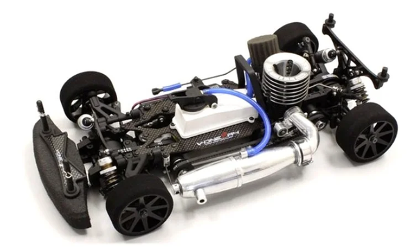

京商 V-One R4

引用元画像：京商公式サイト
📋 基本情報
| メーカー | 京商（Kyosho） |
|---|---|
| 機種名 | V-One R4 |
| シャーシ略称 | V-One R4 |
| 型番 | 31265 |
| 発売時期 | 2011年3月 |
| 価格 | 詳細不明 |
| 生産状況 | 生産終了 |
| カテゴリー | ラジコンカー（1/10スケール GP 4WD） |
| サブカテゴリー | 12-15エンジン ツーリングカー（ピュアテンGP 4WD） |
| シリーズ | V-ONEシリーズ 第4世代 |
📏 シャーシスペック
| 全長 | 368mm |
|---|---|
| 全幅 | 200mm |
| 全高 | 105mm |
| ホイールベース | 258mm |
| トレッド | フロント174mm / リヤ170mm |
| タイヤ | 別売 |
| フレーム | ダブルデッキアルミプレートシャーシ（ベルトドライブ4WD） |
| 全備重量 | 約1,700g（エンジン別売） |
⚙️ 駆動系
| 駆動方式 | ベルトドライブ4WD |
|---|---|
| デフギヤ | ギヤデフ（前後） |
| ギヤ比 | 7.18:1 / 5.09:1（2スピードトランスミッション） |
| トランスミッション | 2スピードトランスミッション |
| ドライブシャフト | ドッグボーンドライブシャフト |
| ベアリング | フルベアリング仕様 |
| エンジン | 12-15クラス後方排気エンジン（別売） |
🔧 サスペンション
| 形式 | 4輪ダブルウィッシュボーン独立懸架 |
|---|---|
| ダンパー | コイルスプリング オイルダンパー×4本 |
| スタビライザー | 標準装備 |
💡 特徴
V-ONEシリーズ 第4世代 - 新時代のGPツーリングカー
- 2011年3月発売、V-ONEシリーズの新世代として登場
- IFMAR世界選手権をはじめとする国内外のビッグレースで輝かしい戦歴
- 2004年・2008年の世界チャンピオンマシン「V-ONE RRRシリーズ」の実績に甘んじることなくゼロから新開発
- 世界チャンピオン、エイドリアン・バーチン選手や日本が誇る世界選ファイナリスト、下高章選手をはじめとした現役トップドライバーが開発スタッフとして参加
徹底した低重心設計
- 大胆な低重心化によりコーナースピードの飛躍的向上
- ハイグリップ路面走行時のハイサイド防止に効果的
- 一目で分かる低重心設計によりコーナリング性能が大幅に向上
ドライブトレイン全般での回転マスモーメントの低減
- 前後デフの大幅な軽量化により飛躍的にコーナースピードアップ
- エンジンパワーをより活かすピックアップの良いスロットルフィーリング
- ピックアップに優れる最新レーシングエンジンの特性を最大限に活かす設計
サスペンションへの数々の新基軸
- 高速サーキットからテクニカルコースまで、幅広く対応できるセッティング対応力
- 研ぎ澄まされた感性がかつてない速さとドライバビリティを実現
- 世界の頂点を狙える走りを提供
レースに生まれ、レースが育んだサラブレッド
- 最新レーシングノウハウを徹底投入
- 1/10GPツーリングカーの"今"を極めるべく誕生したマシン
- 新時代に相応しい、世界の頂点を狙える戦闘力
🔧 ぽすとそに工房での修理実績
修理難易度
★★★★☆（難しい）
パーツ供給が少なく、修理に必要な部品の入手が困難な場合があります。
よくある故障・注意点
- オイルダンパーのオイル漏れ（Oリング劣化）
- ドライブベルトの磨耗・破損（定期的な点検が必要）
- ギヤデフのギヤ磨耗（ハイパワーエンジン使用時）
- ボールジョイントの緩み・脱落（レース前の点検必須）
- ステアリングサーボのギヤ破損（クラッシュ時）
修理のポイント
- オイルダンパーは定期的にオイル交換とOリング交換を実施
- ドライブベルトの張り具合を定期的にチェック（中央部で5mm程度の押し込み）
- ギヤデフは定期的にシリコンオイルの交換を実施
- ボールジョイントは毎レース後にチェックし、緩んでいれば交換
- ステアリングサーボにはサーボセーバーの装着を推奨
- チタン製ドライブシャフトへの交換で耐久性向上
その他の特徴
- 2011年発売のため、現在はパーツ供給が不安定
- 後継モデル（V-One R4 Evo.シリーズ）との部品互換性が高い
- V-One R4 SP、V-One R4s、V-One R4 Evo.などのバリエーションモデルが存在
- 世界選手権を視野に入れた設計のため、レース用途に最適